A hydroelectric power plant control system using Siemens TIA Portal, featuring sequence-driven operation, real-time process control, alarm handling, and HMI-based system interaction.
This project focuses on the design and implementation of a hydroelectric power plant control system using Siemens TIA Portal. The system simulates a real-world industrial process where water flow is used to drive a turbine, generating electrical power while maintaining safe and stable operation.
The plant operates on a dynamically changing river flow, which is controlled using a baffle mechanism driven by an analog output signal. The controlled flow drives a turbine rotor, where rotational speed directly affects power generation. As the system operates, additional subsystems such as oil cooling, generator braking, and interlocks are actively managed to ensure safe performance.
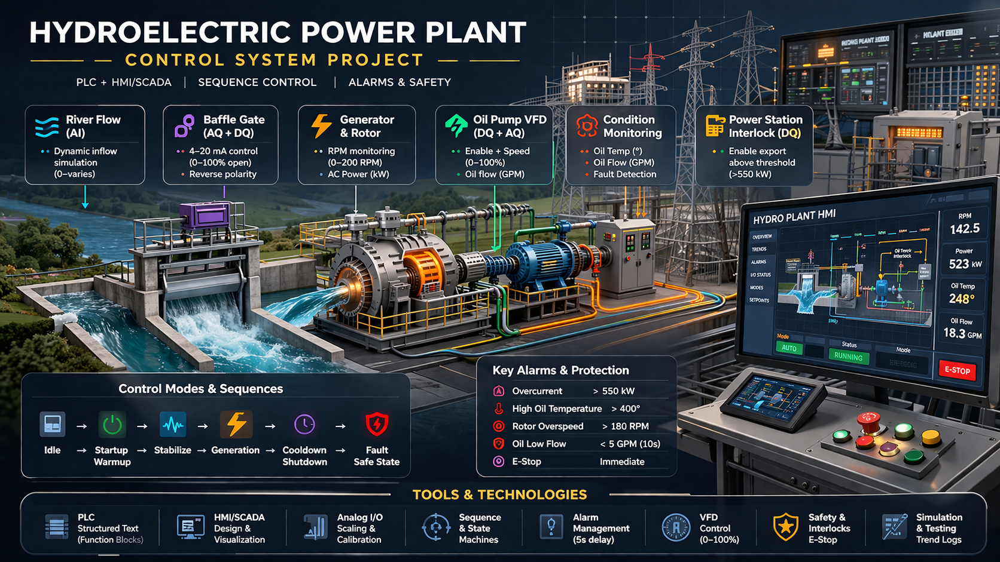
The control system is responsible for coordinating multiple aspects of plant operation, including:
The system is implemented using PLC-based control logic, with a strong focus on real-time decision making, process stability, and safety. An HMI interface is developed to provide operators with system visibility, manual control options, alarm management, and process monitoring.
This project reflects real-world industrial automation challenges, including analog signal scaling, sequence-based control, interlocks, and fault handling, making it representative of modern control systems used in power generation and process industries.
The objective of this project is to design and implement a complete industrial control system for a hydroelectric power plant, focusing on safe, stable, and automated operation under varying process conditions.
The project aims to achieve the following:
The hydroelectric power plant is structured as a closed-loop industrial control system in which the PLC continuously monitors field inputs, evaluates operating conditions, and adjusts outputs to maintain safe and stable generation. The process begins with varying river flow entering the plant, where a baffle actuator regulates the amount of water passing through the turbine-generator assembly.
As water flow increases, rotor speed rises and electrical generation increases accordingly. To support operation, an oil pump driven through a VFD supplies lubrication and cooling to the rotor bearings. The PLC monitors oil flow, oil temperature, rotor speed, and generated power, then coordinates control actions such as baffle positioning, pump enable and speed control, brake engagement, station interlock status, and alarm response.
This architecture reflects a realistic automation workflow in which analog input scaling, digital interlocks, actuator control, alarm handling, and operator visibility are all integrated into one control strategy. From a controls engineering perspective, the project combines process logic, safety response, and HMI supervision in a way that closely resembles real industrial systems.
The control philosophy for this project was developed to ensure that the hydroelectric plant operates in a predictable, stable, and safe manner under both normal and abnormal conditions. Instead of controlling each device independently, I designed the system around coordinated operating modes, process-based transitions, and fault-driven protective actions.
The PLC continuously monitors key process variables such as rotor speed, oil flow, oil temperature, generated power, and emergency stop status. Based on these conditions, the controller determines when the plant is ready to start, when it can transition between modes, and when it must perform a controlled shutdown or fault response.
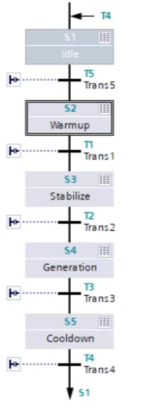
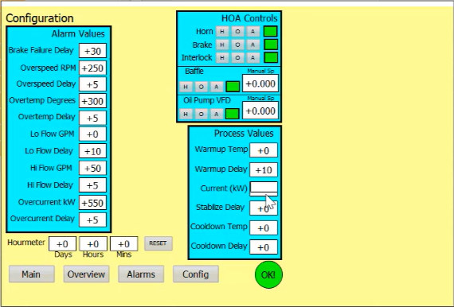
This part of the project demonstrates how I approached the system from a controls engineering perspective: defining process behaviour, building sequence-based operation, implementing safe transitions, and ensuring that both normal operation and abnormal events are handled in a structured way.
A major part of this project was designing the plant around clearly defined operating modes instead of loosely connected device commands. This made the control system easier to understand, easier to troubleshoot, and more representative of real industrial automation practice. Each mode had a specific process objective, clear transition conditions, and defined output behaviour.
I implemented the operating logic so that the plant could move through startup, stabilization, power generation, cooldown, and fault handling in a structured sequence. This approach improved determinism in the PLC program and made system behaviour more transparent from both the programmer and operator perspective.
The sequence begins in Warmup after the operator issues a start command. In this mode, the rotor is allowed to turn at a controlled low speed while the oil pump runs at a low flow rate. The objective is to bring the system to a thermally ready condition before increasing load.
Once the machine is warmed up, the system transitions into Stabilize. In this phase, generation is ramped up in a controlled way until the target output is achieved. The logic checks that the process remains within the allowable operating band before allowing the next transition.
Generation is the normal running mode of the plant. In this state, the process is maintained at operating conditions and the station interlock is engaged so the plant can deliver output. The PLC continues to supervise all critical process variables and alarm conditions while maintaining stable operation.
When a stop command is issued, the system does not simply shut off. Instead, it enters a controlled Cooldown mode where the interlock is opened, rotor speed is reduced, and oil circulation is maintained until the system temperature falls below a safe limit.
Idle represents the safe non-running state of the plant. In this mode, the interlock is open, the baffle is de-energized, and the brake is engaged. This mode provides a stable resting condition until the next start request is issued.
Fault mode handles abnormal operating conditions such as overspeed, overcurrent, high oil temperature, oil flow faults, brake failure, or emergency stop events. In this state, the normal sequence is aborted and the system executes a protective response designed to place the plant into a safe condition.
Structuring the project around these modes helped demonstrate more than just PLC programming. It showed how I think about automation systems in terms of process states, transition logic, operator visibility, and safe machine behaviour — which is exactly how industrial control systems are designed in practice.
The PLC implementation was developed in Siemens TIA Portal with a focus on structured logic, maintainability, and clear separation between sequence control, device control, alarm handling, and operator interaction. Rather than building the program as disconnected rungs, I treated it as an integrated industrial control system in which each part of the logic had a defined purpose within the overall plant behaviour.
I used Ladder Logic for core device control, permissives, interlocks, alarm handling, and discrete process actions, while Siemens GRAPH was used to implement the sequence-driven operating modes of the plant. This combination allowed the system to remain both readable and scalable: Ladder Logic handled the low-level execution and safety behaviour, while GRAPH provided a clean framework for startup, stabilization, generation, cooldown, and fault-related transitions.
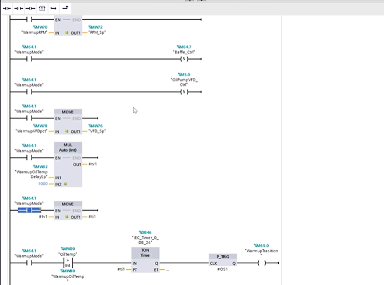
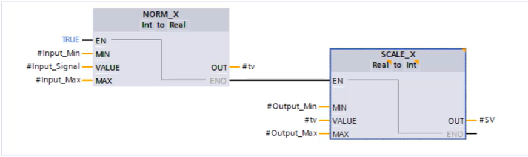
A major part of the implementation involved translating process requirements into practical PLC logic. This included handling analog signal scaling for field values such as rotor speed, oil flow, oil temperature, and generated power, while also generating output references for devices like the baffle actuator and oil pump VFD. Since the project brief defined both raw PLC ranges and engineering-unit display values, the logic had to correctly convert between machine-level signals and operator-facing process values.
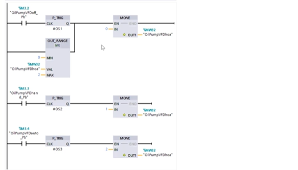
I also implemented control features commonly seen in industrial automation projects, including HOA-based device control, alarm-driven shutdown actions, configurable setpoints and timers, sequence interlocks, and process monitoring structures that supported HMI visibility. In addition, watch tables were used extensively during testing to validate transitions, monitor internal tags, and troubleshoot behaviour under changing simulated process conditions.
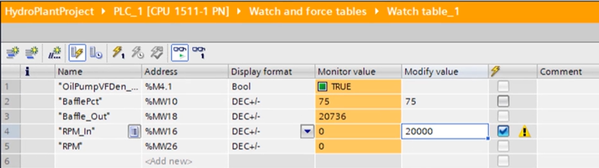
From a controls engineering standpoint, this section of the project best represents the practical development work: building logic that is not only functional, but also organized in a way that supports commissioning, operator interaction, and future expansion. It reflects the kind of structured PLC programming approach used in real industrial automation environments.
Alarm handling in this project was designed as both a protection feature and an operator workflow. Instead of using alarms only for indication, I built the logic so that abnormal process conditions were detected in the PLC, acted upon through defined safety responses, and then presented to the operator through the HMI for acknowledgement and reset.
The PLC continuously monitored key fault conditions such as overcurrent, high oil temperature, overspeed, oil flow issues, brake failure, and emergency stop status. Depending on the alarm type, the logic applied either immediate response or timer-based delay logic before latching the alarm. Once active, the alarm could trigger protective actions such as disengaging the interlock, stopping the VFD, opening the baffle, engaging the brake, and activating the horn.
On the HMI side, the operator was given a dedicated alarm management screen to view active alarms, review alarm history, and interact with alarm controls such as silence and reset. The intended workflow was that the operator first identifies and corrects the root cause of the fault, then acknowledges or silences the alarm as needed, and finally performs a reset to clear the alarm state once the fault condition has been removed.
This approach made the alarm system more realistic from an industrial automation perspective. It demonstrated not only how faults are detected in PLC logic, but also how operators interact with alarmed conditions in a controlled and structured way. That combination of PLC-side protection and HMI-side usability was an important part of making the project feel like a complete control system rather than only a simulation.
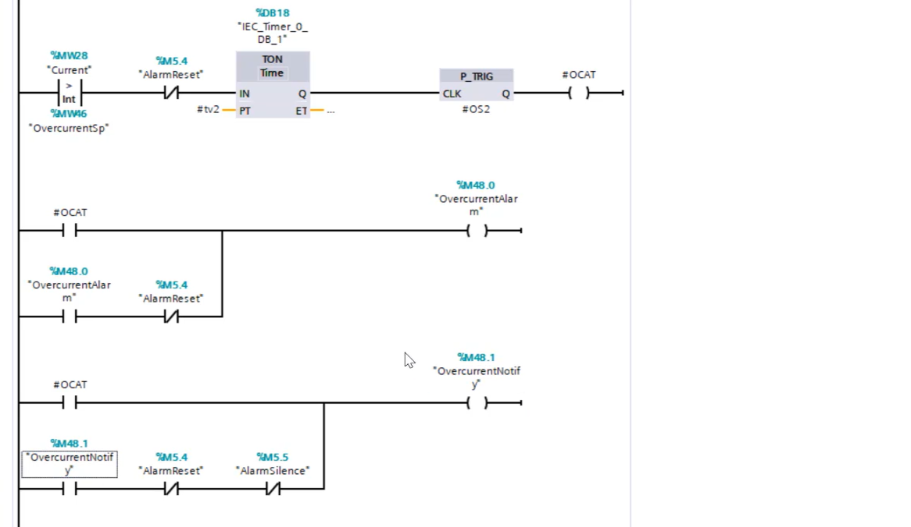
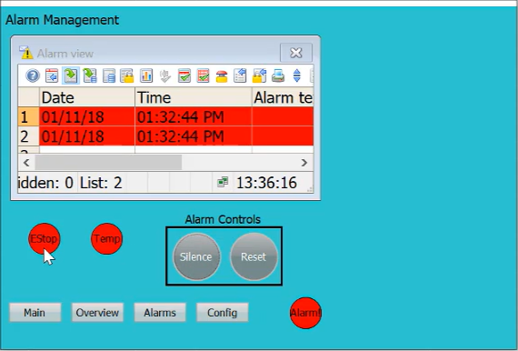
In addition to sequence logic and discrete control, I also implemented PID-based control for key analog process functions in the plant. This was used primarily for baffle control and oil pump VFD control, where the system needed to respond continuously to changing process conditions instead of relying only on fixed output commands.
The PID strategy helped make the plant behaviour more stable and more representative of a real industrial control system. For the baffle, PID control supported smoother adjustment of water flow to influence the process dynamically. For the oil pump VFD, PID control was used to regulate output more intelligently based on operating feedback, improving how the lubrication and cooling subsystem responded during plant operation.
The implementation was carried out using Siemens PID functionality inside TIA Portal, where the controller was integrated into the PLC logic and connected to live process values, setpoints, and output references. I also worked with PID tuning tools to observe controller response, compare setpoint versus measured input, and refine the behaviour of the loop for more stable operation.
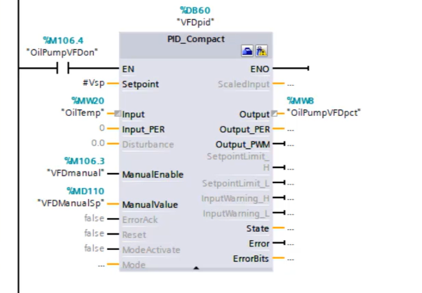
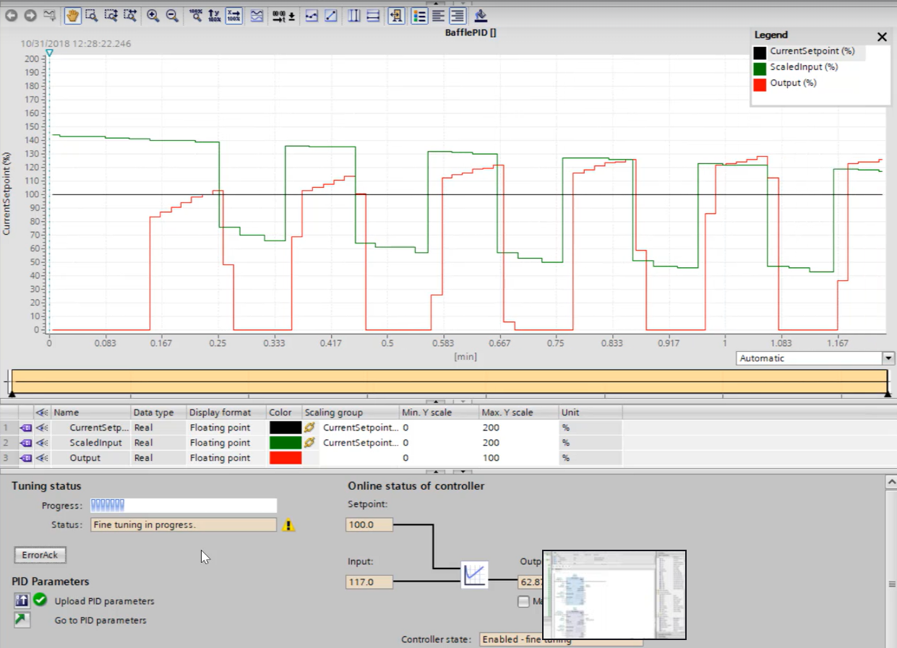
This part of the project helped demonstrate that my controls work was not limited to sequence logic and alarms alone. It also included closed-loop control concepts, tuning, and analog process regulation — all of which are important in real industrial automation systems.
This project brought together multiple areas of industrial automation and controls engineering, from PLC programming and sequence design to HMI development, alarm handling, and commissioning-oriented testing. It reflects both technical implementation ability and practical engineering thinking.
Overall, this project demonstrates my ability to design and implement an industrial-style automation system using Siemens tools, while also thinking through operator interaction, safety response, process behaviour, and maintainable PLC structure.